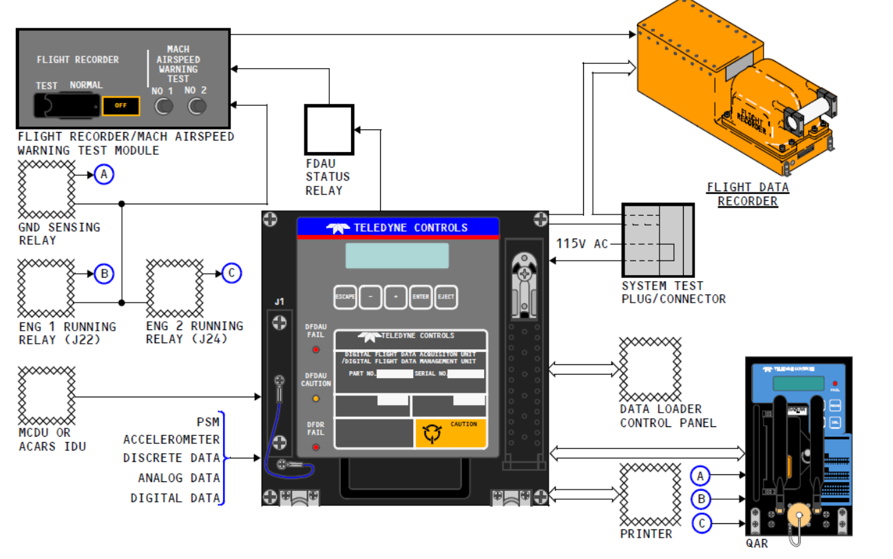

FDR OFF灯亮故障处置方法的维修提示击
背景：
2015年5月4日B-1730飞机深圳过站启动发动机后机组反映FDR OFF灯亮，复位FDR AC和DC跳开关后正常。后续青岛过站自检DFDAU有FDR故障代码，依据手册更换FDR测试正常。 5月9日航前启动完发
动机后机组反映FDR OFF灯亮，指导机组复位FDR AC和DC跳开关后正常。 航后为隔离故障更换DFDAU并加载软件，测试正常。
针对此故障，质量下发了《关于B-1730飞机FDR OFF灯亮重复性故障的调查报告》，现对FDR OFF灯亮故障处置方法编写维修提示，以提醒各基地电子人员。
| 类目 | 详细信息 |
|---|---|
| SDS | 31-31-00 |
| PP | 31-31-00 |
| FIM | FIM31-31 TASK805 |
| SSM | SSM31-31-11 |
| 跳开关 | P18-2 C9/C10 FLIGHTRECORDER AC/DC |
分析:
飞行数据记录器系统储存最近 25 小时工作中的飞机参数与系统数据。 FDR 系统主要部件包括飞行记录器测试组件， DFDAU ,WQAR， FDR。 FDR OFF 灯位于 P5 后头顶板， 有三种情况能
引起 DFDR 系统 OFF 灯亮：
- 飞机在地面且双发关闭（此为正常关闭状态）
- DFDAU 失效
- 由于第一种状态造成的 DFDR 关闭或 DFDR 失效
DFDAU 负责飞机所有相关数据的采集，并发送给 WQAR 和 FDR 记录，获取飞机译码主要有三种方式：
- WQAR 通过手机无线网络传输，需在飞机落地后才能将上一段数据传送到基地。
- DFDAU 通过更换 PC 卡，将 PC 卡数据人工下载并传输至译码处。
- FDR 通过下载机连接 FDR，将数据下载。

提示：
- 如机组反映 FDR OFF 灯亮故障， 在条件允许情况下，建议维修人员先读取 DFDAU 前面板故障灯，如果 DFDR 故障灯亮，代表 FDR 本体故障，如果 DFDAU 灯亮，可以通过 DFDAU 前面板的 LCD 显示器进一步进行自检获取更多信息，以便后续排故。 （ 可参照 FIM31-31 TASK805 进行 DFDAU 测试并排故 ） ，如果启动完发动机或在跑到头报告故障，可以直接指导机组复位 P18-2 板 C9 和 C10 FLIGHTRECORDER AC 和 DC 两个跳开关（ 位于机长座椅肩部高度左侧） 。
- 根据以往数据统计和波音相关材料， FDR 的可靠性较高； DFDAU 可靠性相对较低，若通过复位跳开关后正常，则 DFDAU 间歇性故障的可能性较大，可正常放行，但维修人员应在 AMMS 监控模块建立监控。
- 若监控发现“ FDR OFF”灯亮故障一段时间内频繁出现，维修人员应考虑通过译码确认故障原因。 下图为 B-1730 飞机在故障时对应的 GMT,LRRA 以及气压高度等译码数据异常。 复位跳开
关后译码数据正常。此时应考虑预防性更换 DFDAU.